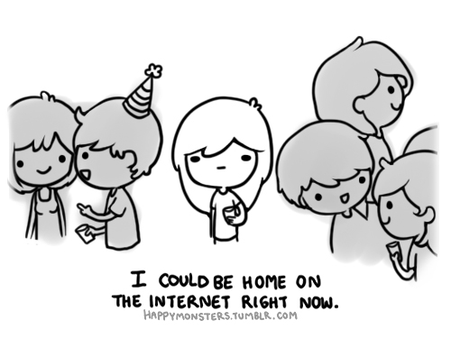

Introverts
No, you are not psychos !
Introduction

Table of Contents
- What is an introvert ?
- Introverts and the World
What is an introvert ?
Formal Definition
“The direction of or tendency to direct one's thoughts and feelings toward oneself.”
Okay... So what does it means ?
Be patient, I'm gonna explain it.
We need to go deeper...
Extraverts : Draw their energy from their environment
Introverts : Draw their energy from their inner selves
Introverts enjoy doing calm activities.
Introverts don't look for crowded places.
Introverts andthe World
How do I live with an introvert ?
Introverts don't hate people !
They just don't feel the need to talk.
Shyness is not Introversion.
A lot of introverts are social persons !
How to live better as an introvert ?
Accept yourself
Introversion is not a mental condition.
Tell the world what you want
People are not your ennemies, but they may not know how do you work.
Experience living
Listening to your inner self is great,
but sometimes, try to open your mind to the world.
Conclusion
- First comicHeyLuchie
- 23 signes que vous êtes secrètement introverti The Huffington Post
- "I could be on the internet right now" comic HappyMonsters